I am interested in Lateral Thinking Puzzles, Brain Teasers, Crosswords, etc. This page contains a list of Puzzles from the Web that I have come across at different points in time, a list of puzzles from the Microsoft College Puzzles Challenge Contest, and a list of Lateral Thinking Puzzles compiled from Paul Sloane's website.
Puzzles from the Web
- Blind Man and Cards. A blind man is handed a deck of 52 cards with exactly 10 cards facing up. How can he divide it into two piles with each pile having the same number of cards facing up?
- Ant in a Room. An ant has to crawl from one corner of a room to the diametrically opposite corner as quickly as possible. If the dimensions of the room are 3 x 4 x 5, what distance does the ant cover?
- Breaking a Chocolate. How many steps are required to break an m x n bar of chocolate into 1 x 1 pieces? We may break an existing piece of chocolate horizontally or vertically. Stacking of two or more pieces is not allowed.
- Divide 100 Marbles into Two Piles. How would you divide 50 black and 50 white marbles into two piles so that the probability of picking a white marble as follows is maximized: we first pick one of the piles uniformly at random, then we pick a marble in that pile uniformly at random?
- Three Boxes and a Ruby. Alice places three identical boxes on a table. She has concealed a precious ruby in one of them. The other two boxes are empty. Bob is allowed to pick one of the boxes. Among the two boxes remaining on the table, at least one is empty. Alice then removes one empty box from the table. Bob is now allowed to open either the box he picked, or the box lying on the table. If he opens the box with the ruby, he gets a kiss from Alice (which he values more than the ruby, of course). What should Bob do?
- Forty Five Minutes. How do we measure forty-five minutes using two identical wires, each of which takes an hour to burn. We have matchsticks with us. The wires burn non-uniformly. So, for example, the two halves of a wire might burn in 10 minute and 50 minutes respectively.
- 1000 Prisoners. A prison has 1000 cells. Initially, all cells are marked with - signs. From days 1 thru 1000, the jailor toggles marks on some of the cells: from + to - and from - to +. On the i-th day, the signs on cells that are multiples of i get toggled. On the 1001-th day, all cells marked with + signs are opened. Which cells are these?
- Weighing Balls. We have two red, two green and two yellow balls. For each color, one ball is heavy and the other is light. All heavy balls weigh the same. All light balls weigh the same. How many weighings on a beam balance are necessary to identify the three heavy balls?
- 3 Heavy and 3 Light Balls. Three out of six lookalike balls are heavy. The other three are light. How many weighings on a beam balance are necessary to identify the heavy balls?
- Cube Cutting. Imagine a 3x3x3 wooden cube. How many cuts do we need to break it into twenty-seven 1×1 cubes? A cut may go through multiple wooden pieces.
Microsoft College Puzzles Challenge Contest
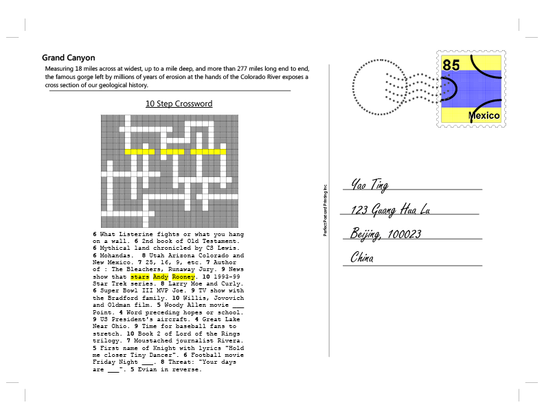
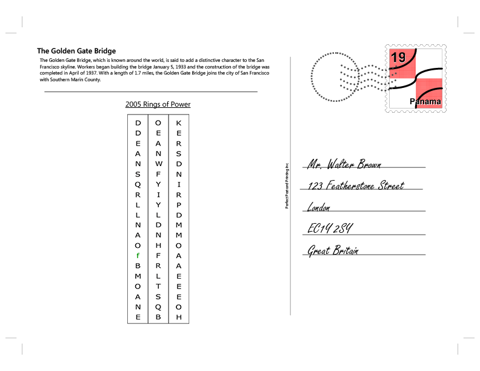
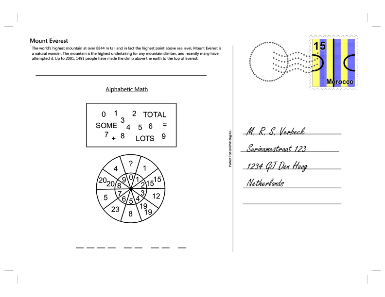
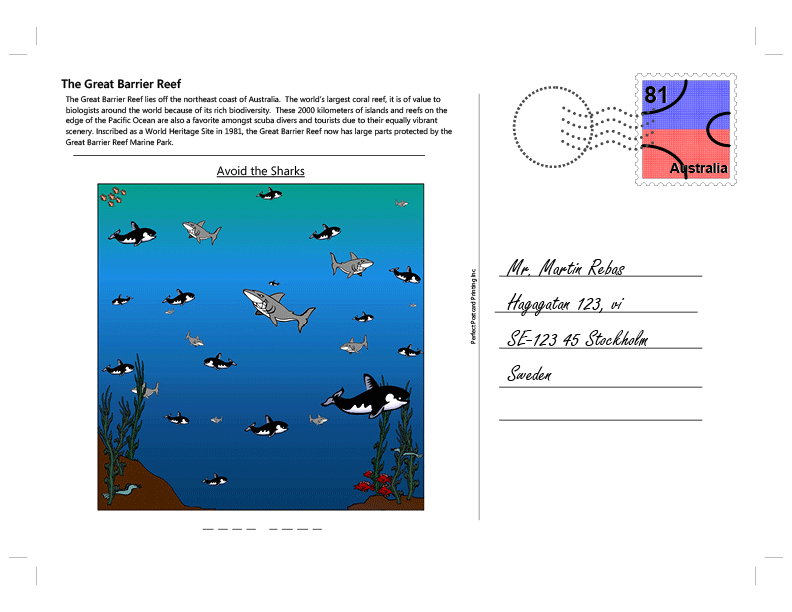
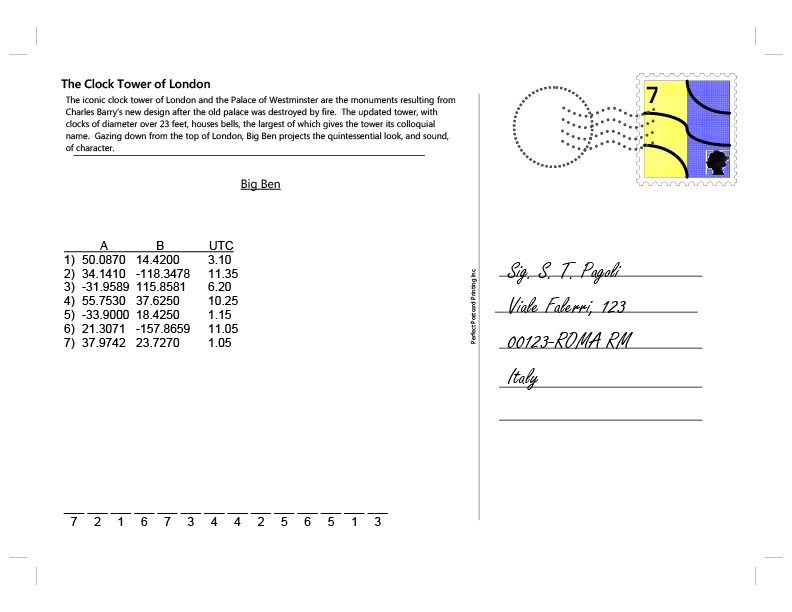
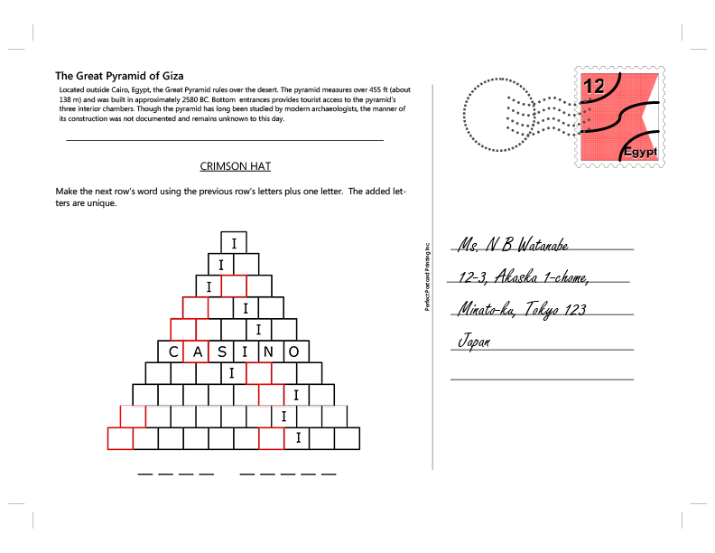
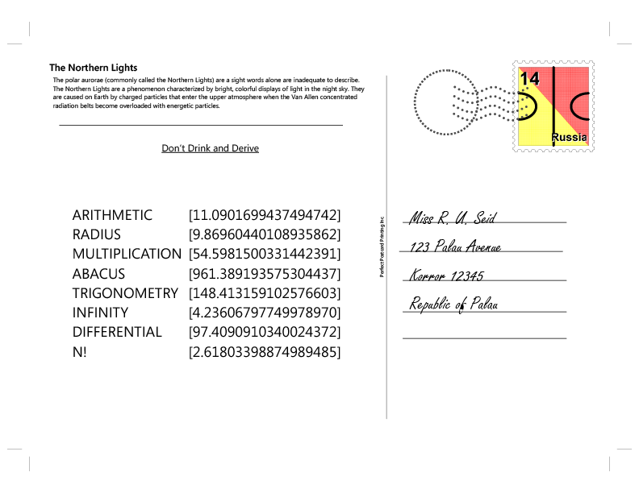
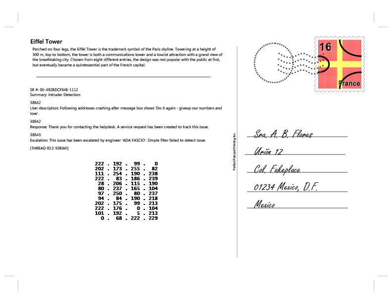
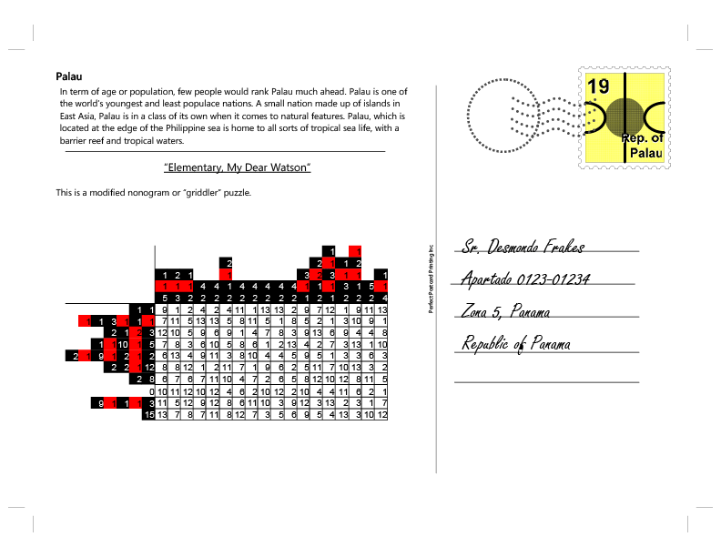
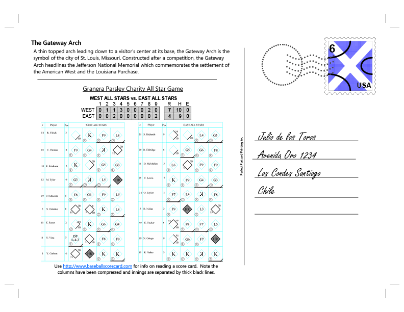
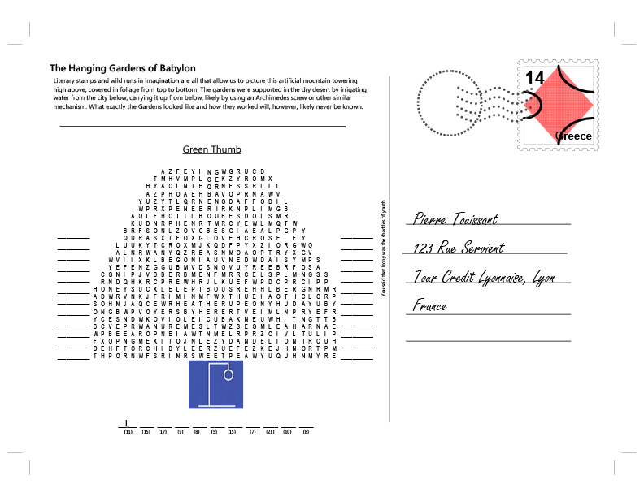
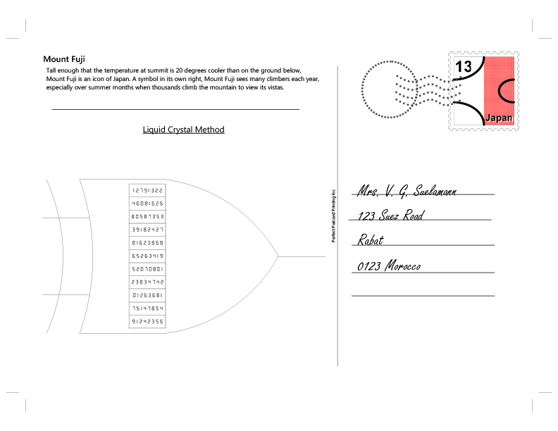
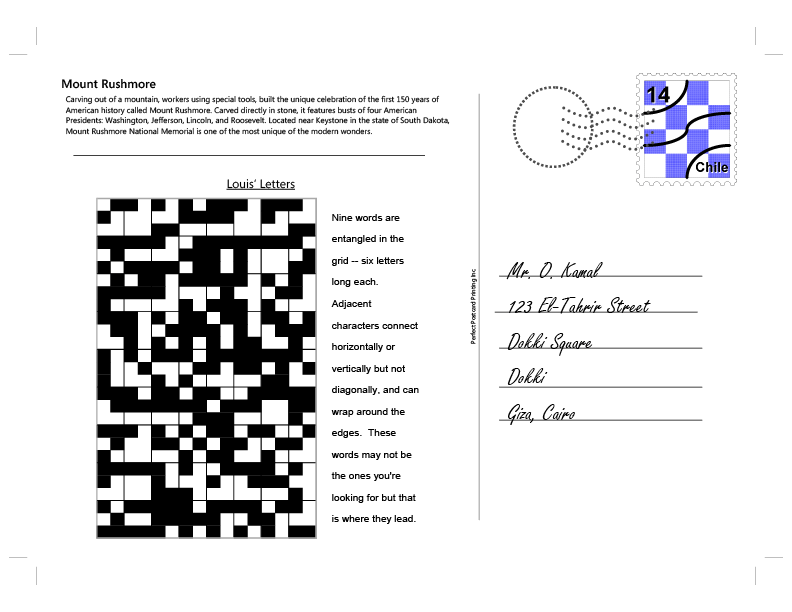
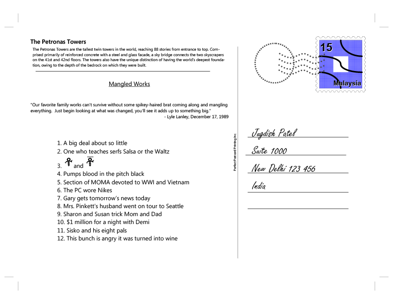
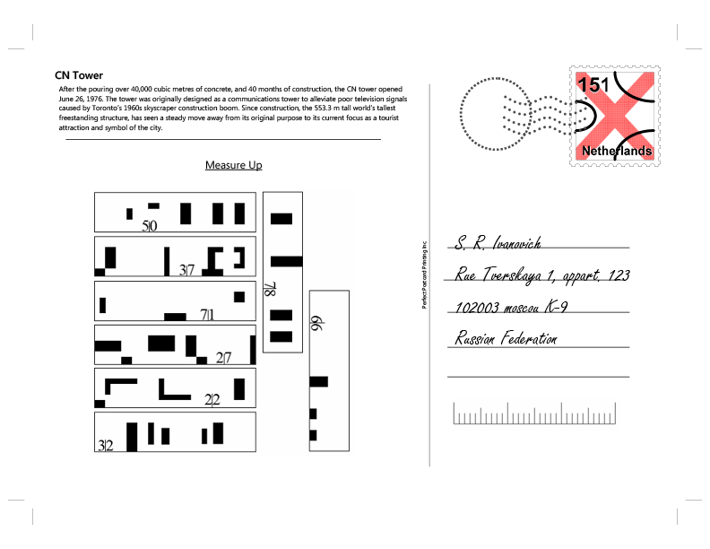
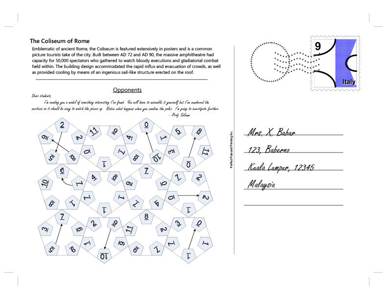
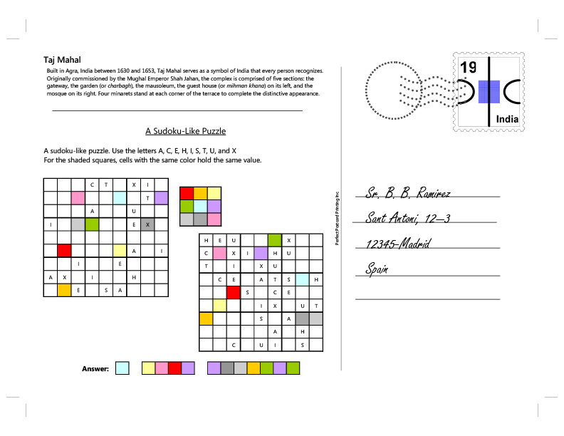
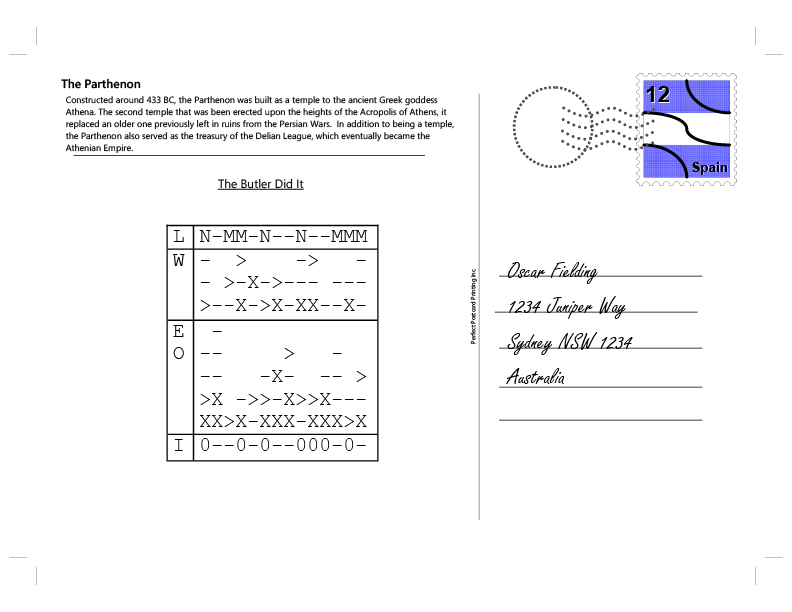
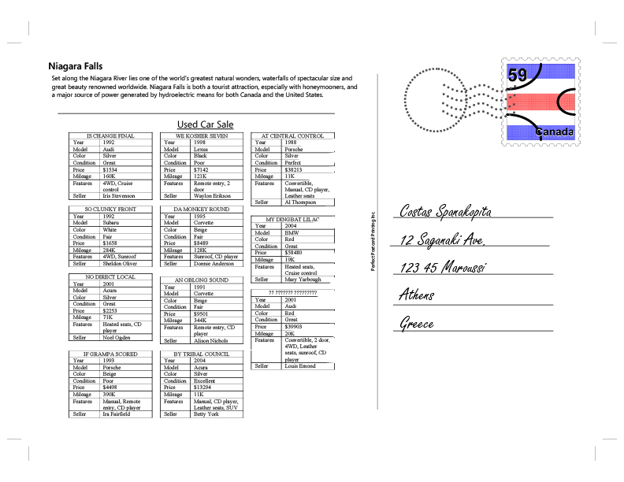
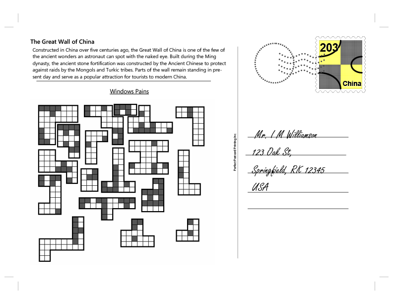
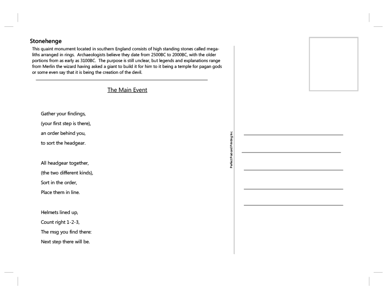
Paul Sloane's List of Classic Lateral Thinking Puzzles
Lateral thinking puzzles are often strange situations which require an explanation. They are solved through a dialogue between the quizmaster who sets the puzzle and the solver or solvers who try to figure out the answer. The puzzles as stated generally do not contain sufficient information for the solver to uncover the solution. So a key part of the process is the asking of questions. The questions can receive one of only three possible answers - yes, no or irrelevant.
When one line of enquiry reaches an end then another approach is needed, often from a completely new direction. This is where the lateral thinking comes in. Some people find it frustrating that for any puzzle it is possible to construct various answers which fit the initial statement of the puzzle. However, for a good lateral thinking puzzle, the proper answer will be the best in the sense of the most apt and satisfying. When you hear the right answer to a good puzzle of this type you should want to kick yourself for not working it out!
This kind of puzzle teaches you to check your assumptions about any situation. You need to be open-minded, flexible and creative in your questioning and able to put lots of different clues and pieces of information together. Once you reach a viable solution you keep going in order to refine it or replace it with a better solution. This is lateral thinking!
This list contains some of the most renowned and representative lateral thinking puzzles as well as some of those which crop up most frequently on the net. Lateral Puzzles Forum
- Man in the Building. A man lives on the tenth floor of a building. Every day he takes the elevator to go down to the ground floor to go to work or to go shopping. When he returns he takes the elevator to the seventh floor and walks up the stairs to reach his apartment on the tenth floor. He hates walking so why does he do it? This is probably the best known and most celebrated of all lateral thinking puzzles. It is a true classic. Although there are many possible solutions which fit the initial conditions, only the canonical answer is truly satisfying.
- The Bar. A man walks into a bar and asks the barman for a glass of water. The barman pulls out a gun and points it at the man. The man says 'Thank you' and walks out. (This puzzle has claims to be the best of the genre. It is simple in its statement, absolutely baffling and yet with a completely satisfying solution. Most people struggle very hard to solve this one yet they like the answer when they hear it or have the satisfaction of figuring it out.)
- The Barn. Not far from Madrid, there is a large wooden barn. The barn is completely empty except for a dead man hanging from the middle of the central rafter. The rope around his neck is ten feet long and his feet are three feet off the ground. The nearest wall is 20 feet away from the man. It is not possible to climb up the walls or along the rafters. The man hanged himself. How did he do it?
- Dead Man. A man is lying dead in a field. Next to him there is an unopened package. There is no other creature in the field. How did he die?
- Egyptian Death. Anthony and Cleopatra are lying dead on the floor of a villa in Egypt. Nearby is a broken bowl. There is no mark on either of their bodies and they were not poisoned. How did they die?
- Five Pieces of Coal. Five pieces of coal, a carrot and a scarf are lying on the lawn. Nobody put them on the lawn but there is a perfectly logical reason why they should be there. What is it?
- Not Twins? A woman had two sons who were born on the same hour of the same day of the same year. But they were not twins. How could this be so?
- Bankrupt. A man pushed his car. He stopped when he reached a hotel at which point he knew he was bankrupt. Why?
- The Parcel. One day a man received a parcel in the post. Carefully packed inside was a human arm. He examined it, repacked it and then sent it on to another man. The second man also carefully examined the arm before taking it to the woods and burying it. Why did they do this?
- Adam and Eve. A man died and went to Heaven. There were thousands of other people there. They were all naked and all looked as they did at the age of 21. He looked around to see if there was anyone he recognised. He saw a couple and he knew immediately that they were Adam and Eve. How did he know?
- Missing Days. A man rode into town on Friday. He stayed for three nights and then left on Friday. How come?
- Manhole Covers. Why is it better to have round manhole covers than square ones? This is logical rather than lateral, but it is a good puzzle which can be solved by lateral thinking techniques. It is supposedly used by a very well-known software company as an interview question for prospective employees.
- The Cursed Party. A man went to a party and drank some of the punch. He then left early. Everyone else at the party who drank the punch subsequently died of poisoning. Why did the man not die?
- Restaurant Menu. Two men went into a restaurant. They both ordered the same dish from the menu. After they tasted it, one of the men went outside the restaurant and shot himself. Why?
- Death of Wife. A man was walking downstairs in a building when he suddenly realized that his wife had just died. How?
- Blind Begger. A blind beggar had a brother who died. What relation was the blind beggar to the brother who died? (Brother is not the answer).
- The Broken Match. A man is found dead in a field. He is clutching a broken match. What happened?
- The Music. The music stopped. She died. Explain.
- The Swimmer? Deep in the forest was found the body of a man who was wearing only swimming trunks, snorkel and facemask. The nearest lake was 8 miles away and the sea was 100 miles away. How had he died?